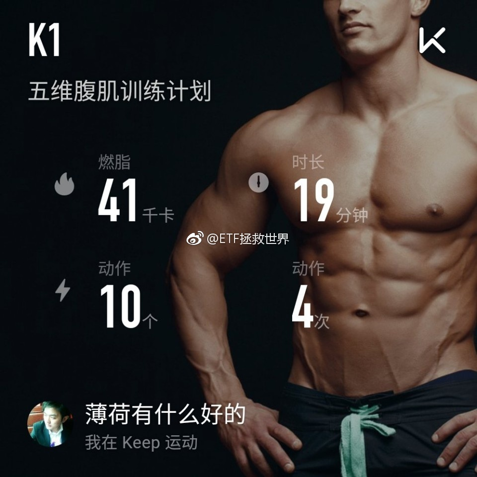

回复@注册只为看E大:恭喜！！！//@注册只为看E大:今天对我很特别，当爹啦，小名多米，求祝福@ETF拯救世界:每日打卡(41)今天没什么特别的。随便练练腹肌，哄儿子睡觉，再去看会书。相当平凡的一天啊。 
回复@Carreylovebook:怎么讲，拍的很舒服……//@Carreylovebook:回复@且慢管家:大家都急不可耐了哈，但感觉E大仍是 闲坐小窗读周易，不知春去几多时，发车时有种优雅与豪情并存的睿智@ETF拯救世界:市场走势，尤其是中短期走势真的无法预测。我们要做的就是停止预测，根据概率下注。就这么简单。概率！！！
回复@双树下的和尚1:证金不买真正的聪明资金也会开始关注创业板。A股有20%聪明资金，其中10%因为各种情况变傻了，比如绝大部分公募。其它的聪明资金不停的在市场上寻找机会，哪里低就流向哪里。等大多数人反应过来，别人已经布局完毕。@ETF拯救世界:市场走势，尤其是中短期走势真的无法预测。我们要做的就是停止预测，根据概率下注。就这么简单。概率！！！
创业板贵么。创业板大多数股票都贵，但$创业板指 sz399006$ 未必。即使不跌，明年此时估值也就30多倍。30多倍的创业板指买一点怕什么？140倍的时候不说贵，30多倍说贵？公募都跑了，GJD开始买了，个人投资者，又没有排名压力，不买便宜货难道去接盘机构炒起来的大白马吗。呵呵哒。还差几天就要买了，只想说，现在跟我抢的都是垃圾……
回复@小动物爱好者:以现在的情况看不会超过5份。当然，如果这几天坑挖的深了就不好说了。//@小动物爱好者:啥时候发车？大概几份@ETF拯救世界:2015年，你越买越涨，随便买随便涨，怎么买都涨。结果……2017年，买了不涨，有的还在跌。越跌越买，跌越多买越多，结果会是？未来和时间会给我们答案。
回复@wenxinyutao:下轮牛市不会是所有股票都涨。可以参考最近半年的50和300。所以，很多炒股的人，下一轮牛市基本上吃不到什么，“赚了股票不赚钱”。指数投资就不同。//@wenxinyutao:以目前A股的扩容速度，即便来大牛市，会不会也是涨幅有限呢@ETF拯救世界:2015年，你越买越涨，随便买随便涨，怎么买都涨。结果……2017年，买了不涨，有的还在跌。越跌越买，跌越多买越多，结果会是？未来和时间会给我们答案。